First Slide
This is the caption for the first slide.

Second Slide
This is the caption for the second slide.

Third Slide
This is the caption for the third slide.
Telecomunicaciones
¿Que son las Telecomunicaciones?
Una telecomunicación es toda transmisión y recepción de señales de cualquier naturaleza, típicamente electromagnéticas, que contengan signos, sonidos, imágenes o, en definitiva, cualquier tipo de información que se desee comunicar a cierta distancia.
Por metonimia, también se denomina telecomunicación (o telecomunicaciones, indistintamente) a la disciplina que estudia, diseña, desarrolla y explota aquellos sistemas que permiten dichas comunicaciones; de forma análoga, la ingeniería de telecomunicaciones resuelve los problemas técnicos asociados a esta disciplina.
Las telecomunicaciones son una infraestructura básica del contexto actual. La capacidad de poder comunicar cualquier orden militar o política de forma casi instantánea ha sido radical en muchos acontecimientos históricos de la Edad Contemporánea —el primer sistema de telecomunicaciones moderno aparece durante la Revolución Francesa—. Pero además, la telecomunicación constituye hoy en día un factor social y económico de gran relevancia. Así, estas tecnologías adquieren una importancia como su utilidad en conceptos de la globalización o la sociedad de la información y del conocimiento; que se complementa con la importancia de las mismas en cualquier tipo de actividad mercantil, financiera, bursátil o empresarial. Los medios de comunicación de masas también se valen de las telecomunicaciones para compartir contenidos al público, de gran importancia a la hora de entender el concepto de sociedad de masas.
La telecomunicación incluye muchas tecnologías como la radio, televisión, teléfono y telefonía móvil, comunicaciones de datos, redes informáticas o Internet. Gran parte de estas tecnologías, que nacieron para satisfacer necesidades militares o científicas, ha convergido en otras enfocadas a un consumo no especializado llamadas tecnologías de la información y la comunicación, de gran importancia en la vida diaria de las personas, las empresas o las instituciones estatales y políticas.
Señales Analogicas
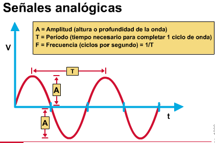
Una señal analógica es un tipo de señal generada por algún tipo de fenómeno electromagnético y que es representable por una función matemática continua en la que es variable su amplitud y periodo (representando un dato de información) en función del tiempo. Algunas magnitudes físicas comúnmente portadoras de una señal de este tipo son eléctricas como la intensidad, la tensión y la potencia, pero también pueden ser hidráulicas como la presión y térmicas como la temperatura.
Los datos analógicos se refieren a información que toma valores continuos, como el sonido de la voz humana. Cuando alguien habla, crea una onda continua en el aire.
Esta onda es capturada por un micrófono (transductor) y convertida en señal analógica.
Una señal digital es una onda con saltos repentinos entre un valor de voltaje y otro. Tiene un número discreto de valores. A menudo es tan simple como “0” y “1”.
Onda Seno
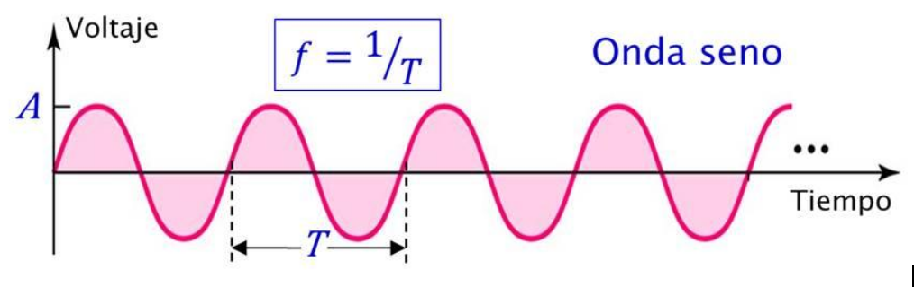Es la forma más fundamental de una señal analógica. Visualizada como una curva oscilante, cuyo cambio a lo largo de un ciclo es suave.
Es una señal periódica porque completa un ciclo dentro de un marco de tiempo medible, denominado periodo, y repite ese ciclo en periodos de tiempo subsecuentes.
Amplitud pico de la onda
La amplitud pico de una señal en una gráfica es el valor absoluto de su intensidad más alta (A), proporcional a la energía que transporta. En señales eléctricas, se mide en V.
¿Qué son el periodo y la frecuencia?
El periodo T es la cantidad de tiempo que necesita una señal para completar un ciclo; se mide en s.
La frecuencia f indica el número de ciclos por segundo; se mide en ciclos/s o Hz. La frecuencia es la inversa del periodo.
Señales Digitales
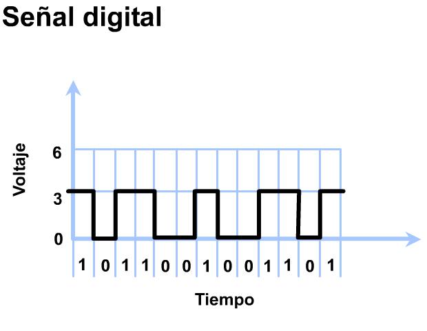 La señal digital es un tipo de señal en que cada signo que codifica el contenido de la misma puede ser analizado en término de algunas magnitudes que representan valores discretos, en lugar de valores dentro de un cierto rango. Por ejemplo, el interruptor de la luz sólo puede tomar dos valores o estados: abierto o cerrado, o la misma lámpara: encendida o apagada. Esto no significa que la señal físicamente sea discreta ya que los campos electromagnéticos suelen ser continuos, sino que en general existe una forma de discretizarla unívocamente.
Los sistemas digitales, como por ejemplo el ordenador, usan la lógica de dos estados representados por dos niveles de tensión eléctrica, uno alto, H y otro bajo, L (de High y Low, respectivamente, en inglés). Por abstracción, dichos estados se sustituyen por ceros y unos, lo que facilita la aplicación de la lógica y la aritmética binaria. Si el nivel alto se representa por 1 y el bajo por 0, se habla de lógica positiva y en caso contrario de lógica negativa.
Duración de bit en ves del periodo, tiempo en segundos para mandar un bit y la tasa de bits para representar la frecuencia.
8bits/seg = 1bit/125ms
Vt(bps)= 1/(tb*s)
Una señal digital puede tener mas niveles que el 0 y el 1.
Señal digital periódica
La señal se descompone en una serie de ondas seno con frecuencias discretas de valores enteros (1, 2, 3, 4, ..), denominadas frecuencia fundamental, 2do. armónico, 3er. armónico, etc.
Señal digital aperiódica
La señal se descompone en un número infinito de ondas seno con frecuencias continuas de valores reales.
Señales Compuestas
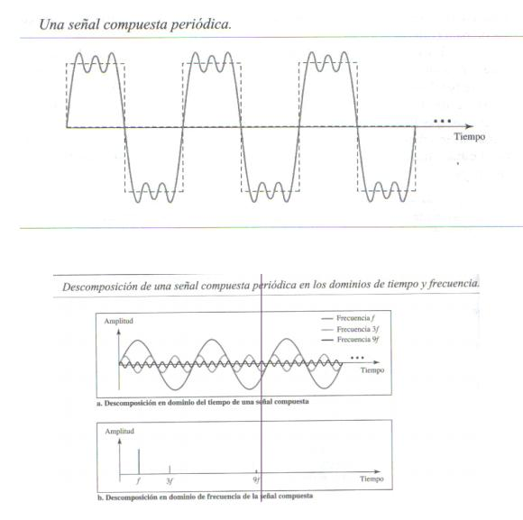
Periódicas: Tienen algún patrón o ciclo. Aperiódicas: Cambia sin exhibir algún patrón o ciclo. Ancho de banda: es la longitud, medida en Hz, de la extensión de frecuencias en la que se concentra la mayor potencia de la señal. Análisis de Fourier
¿Porqué son necesarias las señales compuestas?
Hasta aquí se han analizado ondas seno que son señales periódicas simples. Si sólo se tuviera una onda seno para transportar una conversación telefónica, no tendría sentido y no transportaría información. Sólo se oiría un zumbido. Es necesario, por tanto, enviar una señal compuesta para comunicar datos.
Señal compuesta periódica
Hay muchas ondas útiles que no son seno; en lugar de eso saltan, se desfasan, tienen picos y presentan depresiones. Pero si estas irregularidades son consistentes para cada ciclo, la señal es periódica y se la puede describir en los mismos términos que los usados para las ondas seno.
Señal compuesta aperiódica
Una señal aperiódica cambia sin exhibir ningún patrón o ciclo que se repite en el tiempo. La mayoría de las ondas del mundo real son aperiódicas.
Ancho de banda de señal compuesta
Es el rango de frecuencias contenidas en ella. Es la diferencia entre la frecuencia más alta y más baja contenidas en la señal
Sistema de Transmision
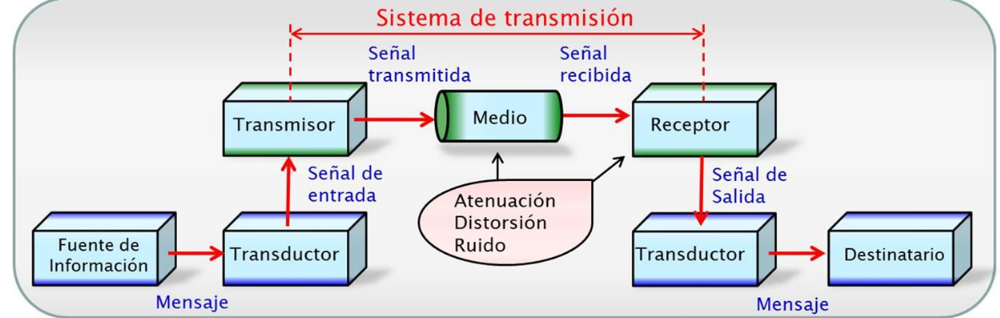
| Fuente de información | Donde se genera la información y se transforma en mensaje. |
| Transductor(in) | Convierte el mensaje en una señal eléctrica (voltaje o corriente). |
| Transmisor | Adecúa la señal de entrada al medio de transmisión. Implica una modulación. |
| Medio | Medio físico que une el transmisor con el receptor. La comunicación toma la forma de ondas electromagnéticas, las cuales se deterioran debido al ruido, distorsión y atenuación. |
| Receptor | Recupera la señal del medio y realiza las operaciones inversas del transmisor. |
| Transductor(out) | Convierte la señal de salida en un mensaje para el destinatario. |
Ondas de Radio
Las señales de información (voz, video, datos) se transmiten, por lo general, a través de medios guiados. Pero, cuando las distancias son grandes, o cablear es caro, o por razones de movilidad, se utiliza la transmisión por radio.
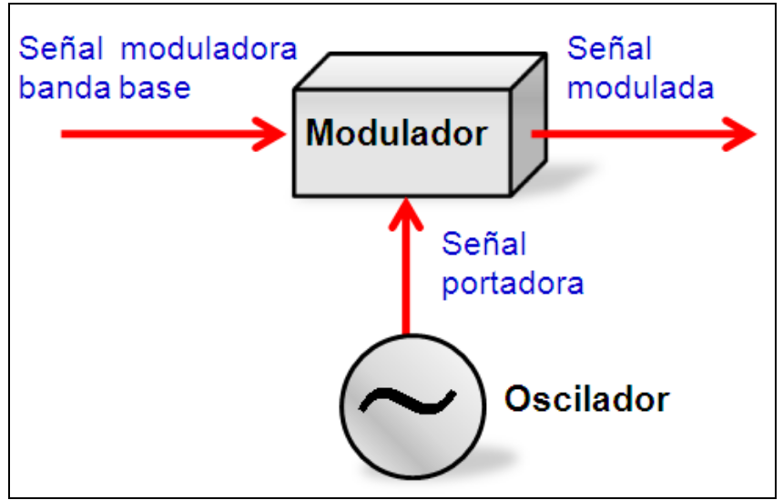Recurrir a la técnica de modulación, mediante la cual la información se “imprime” en una onda senoidal de alta frecuencia conocida como portadora.
El tipo de modulación depende de la señal moduladora a transmitir, la cual puede ser:
-Analógica (voz y video)
-Digital (voz y video digitalizados y datos de PC).
La modulación consiste en variar un parámetro de la portadora: la amplitud, frecuencia o fase
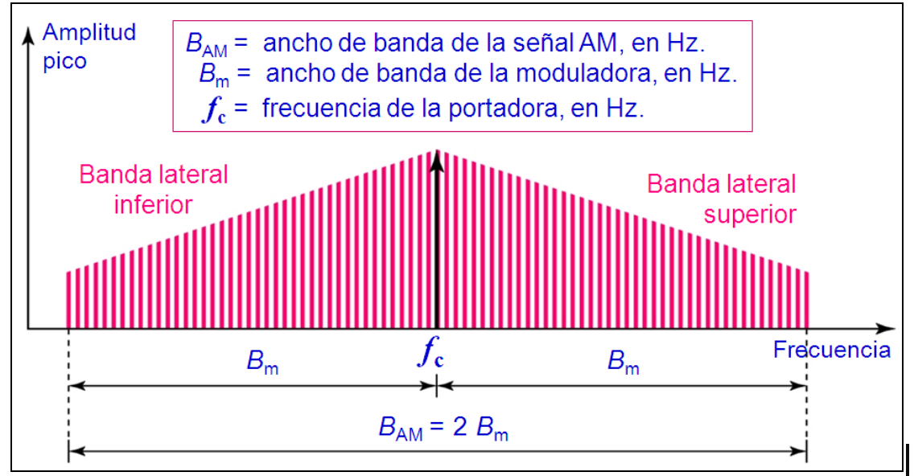Esquema de AM
La modulación AM crea un ancho de banda igual al doble que el ancho de banda de la señal moduladora, centrado alrededor de la frecuencia portadora.
Ambas bandas laterales llevan a misma información. Por esta razón, en algunas aplicaciones se descarta una banda, reduciendo el ancho de banda a la mitad.
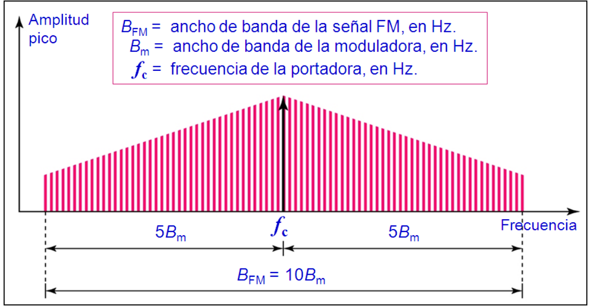
Esquema FM
La modulación FM crea un ancho de banda difícil de determinar, pero se puede demostrar empíricamente que es varias veces la de la moduladora, dependiendo de los parámetros de modulación. 10 es un valor frecuente.
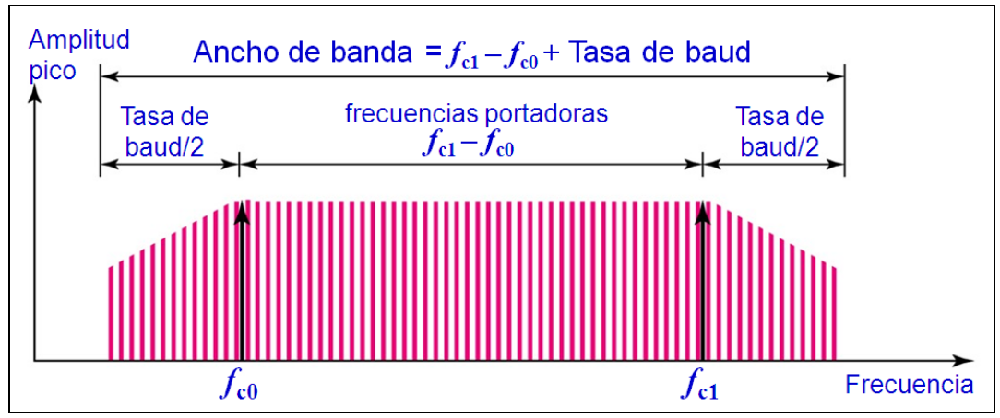
Modulacion digital
La modulación digital crea un ancho de banda proporcional a la tasa de señal en baud, centrado alrededor de la frecuencia portadora.
Significa que si hay disponible un canal paso banda, se puede elegir la portadora de manera que la señal modulada ocupe el ancho de banda. Espectro de ASK, PSK y QAM
Se puede pensar en FSK como en dos señales ASK, cada una con su frecuencia portadora.
El transmisor es la unidad electrónica que acepta la señal de información que se transmite y la convierte en una señal de radiofrecuencias capaz de transmitirse a grandes distancias.
A pesar de la gran variación en la potencia de salida, apariencia física y tipo de modulación, los transmisores tienen sólo unas configuraciones básicas.
Bandas de las ondas de radio
Se divide en segmentos. Cuando se asignaron nombres, sólo se consideraron las bandas de bajas, medias y altas frecuencias (LF, MF y HF). Nadie esperaba rebasar los 10 MHz.
Cuando sucedió, se asignaron nombres hacia arriba y abajo. Las más altas se denominaron bandas de muy, ultra, súper y extremadamente alta frecuencia (VHF, UHF, SHF y EHF).
Más allá de eso ya no hay nombres; sin embargo, se han sugerido las siguientes designaciones: tremendamente, increíblemente, asombrosamente y prodigiosamente alta frecuencia (THF, IHF, ASH y PHF).
Satelites
¿Qué es una red por satélite?
Es una combinación de nodos, algunos de los cuales son satélites, que ofrecen comunicación de un punto de la Tierra a otro. Un nodo en la red puede ser un satélite, una estación terrena o un teléfono.
Un satélite es un nodo repetidor
La Luna puede usarse como nodo repetidor, pero se prefieren los satélites artificiales debido a que en ellos se pueden instalar equipos para regenerar la señal que pierde mucha energía durante el viaje, además del retardo por la distancia. ¿Cómo operan las redes por satélite? Igual que las redes móviles, en el sentido que dividen el planeta en celdas ( ver huellas), ofreciendo capacidades de transmisión hacia y desde cualquier punto de la Tierra, utilizando radioenlaces por microondas.
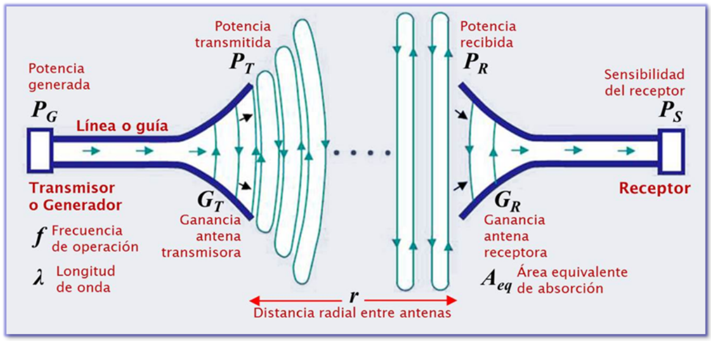¿Cuándo se utilizan?
Se utilizan cuando las distancias son grandes, o cablear es caro, o por razones de movilidad. Significa que las señales de voz, video o datos se transmiten por ondas de radio → radioenlace por microondas. (APC, 2007). A continuación se mostrará un esquema básico de un radioenlace por microondas
Existen 2 tipos de radioenlaces por microondas:
| Satelital | Donde uno de los nodos está en un satélite |
| Terrestre | Donde todos los nodos están en la tierra |
Generalmente, los radioenlaces se explotan entre 2 y 50 GHz, por eso se llaman radioenlaces por microondas.
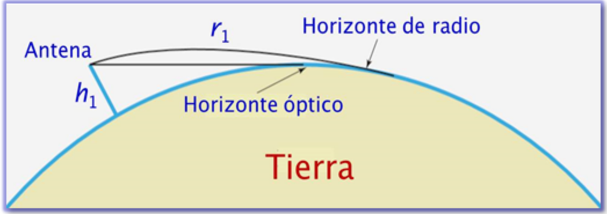
Las microondas son altamente direccionales. Cuando una antena transmite, se enfoca de forma muy precisa. Significa que ambas antenas, transmisora y receptora, deben estar alineadas.
Uno de los principales obstáculos para la radiocomunicación de larga distancias ha sido siempre la curvatura de la Tierra.
El alcance máximo depende de la altura de las torres donde se encuentran las antenas.
Y ¿como se incrementa el alcance?
Utilizando estaciones repetidoras, las cuales permiten también salvar obstáculos como montañas. Pero para llegar a lugares inhóspitos o a otros continentes, la estación repetidora se puede emplazar en un satélite artificial.
| Categoria | Descripcion |
|---|---|
| GEO | Altura: 35.786 km sobre el ecuador. Ecuatorial Periodo orbital: 24 horas. Constelación: Intelsat, Eutelsat, PanAmSat, Hispasat, Embratel. |
| MEO | Altura: 5.000~15.000 km, y cerca de 20.000 km. Inclinada. Periodo orbital: 11~12 horas. Constelación: GPS, Glonass. |
| LEO | Altura: 500~2.000 km. Polar. Periodo orbital: 90~120 minutos. Constelación: Iridium, Globalstar, Teledesic. |
| HEO | Altura: 500 (perigeo) a 70.000 km (apogeo). Elíptica. Periodo orbital: 12~24 horas. Constelación: Molniya, Sirius |
¿Por qué existen diferentes órbitas?
Una razón es la existencia de dos cinturones de Van Allen. Son campos energéticos en forma de toroide que rodean a la Tierra y que contienen partículas cargadas.
¿A qué altura se encuentran?
Un satélite que orbitará en uno de estos 2 cinturones sería totalmente destruido por las partículas cargadas energéticamente.
Sistema de comunicacion por satelite
1.Segmento espacial.
Lo constituye el satélite que actúa como nodo repetidor.
2.Segmento de control.
Es la estación de control desde donde se controla al satélite.
3.Segmento terrestre.
Lo constituyen las estaciones terrenas transmisoras y receptoras
Estructura de un satelite
Operación básica del satélite: El receptor del satélite capta la señal transmitida a 6 GHz y la amplifica
La transmisión Tierra - satélite se denomina enlace de subida.
El transpondedor traslada la frecuencia, de 6 GHz a 4 GHz.
Se amplifica y retransmite la señal a 4GHz.
La transmisión satélite - Tierra se denomina enlace de bajada.
¿Porqué se traslada la frecuencia?
Porque el transpondedor no puede recibir y transmitir en la misma frecuencia. La potencia de la señal transmitida bloquearía a la débil señal que llega desde Tierra. Se necesita un espacio amplio entre las frecuencias de ambos enlaces.

Asignación de frecuencias para satélites
El espectro de microondas se divide en bandas de frecuencias que se designan por una letra del alfabeto.
Cada satélite recibe y envía utilizando dos bandas diferentes:
La transmisión desde Tierra al satélite se denomina de subida Uplink.
La transmisión desde el satélite a Tierra se denomina de bajada Downlink.
La comunicación entre satélites se denomina enlace intersatélite. La banda C ya está congestionada, por lo que los nuevos satélites operarán en la banda Ku (Neri, 2003).
El transpondedor del satélite
¿Qué es y cómo funciona?
Es un dispositivo electrónico que mezcla dos señales de entrada, a frecuencias diferentes, produciendo a su salida:
La suma de las frecuencias de entrada.
La diferencia entre las frecuencias de entrada.
Usa un filtro para eliminar la señal de frecuencia más alta.
Por lo general, hay 12 transpondedores, cada uno asignado a uno de los 12 canales en que se divide el ancho de banda.
Y gracias a ciertos tipos de modulación, un transpondedor de 36 MHz logra manejar datos a velocidades de hasta 60 Mbps, o también hasta 1.000 conversaciones telefónicas y un canal completo de TV.
Orientación de la antena de estación terrena
¿Qué datos deben conocerse?
Los datos de acimut y elevación con los que se orientará la antena para interceptar al satélite.
¿Qué son el acimut y la elevación?
| Acimut | Es el ángulo medido en el plano horizontal, desde el Norte hacia el Este hasta el punto del subsatélite. |
| Elevación | Es el ángulo medido desde el plano horizontal hasta la posición del satélite. |
Por tanto, el acimut y elevación en grados dicen dónde debe apuntar la antena.
Propagación de la señal en un enlace satelital
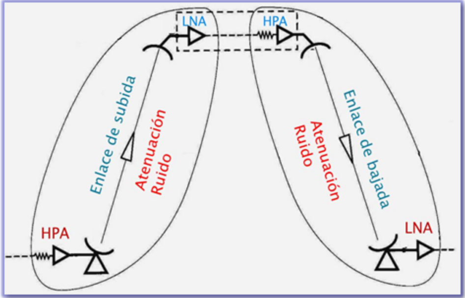Sube la señal luego de ser amplificada por el amplificador de potencia HPA y la ganancia de la antena. Adquiere un nivel de potencia (PIRE), del orden de 30~60 dBW.
En el trayecto, la señal se atenúa porque se dispersa en el espacio libre (valores de 195~214 dB). La absorción de la atmósfera y la lluvia también la atenúan.
La presencia de ruido en el trayecto afecta a la señal que llega muy debilitada al satélite (algunos nW~pW). Las fuentes de ruido son el ruido térmico de los circuitos, radiaciones que provienen del espacio exterior, la lluvia, etc.
Al llegar al satélite, la ganancia de la antena compensa en algo la pérdida. Las antenas son dispositivos pasivos que crean el efecto de amplificación debido a su forma física. Valores de 39~57 dBi.
Ya en el satélite, la señal es amplificada por el amplificador de bajo ruido LNA, cuyo principal parámetro es el Factor de Ruido, el cual debe tener un valor mínimo de 0.6~3dB para que el enlace funcione aceptablemente, es decir que el ruido no afecte a la señal.
En la trayectoria de bajada sucede lo mismo, solo que a la inversa.
Atenuación, distorsión y Ruido
Deterioro de la transmisión
¿Por qué se deteriora?
Porque los medios de transmisión por los que b¿viajan las señales no son perfectos. Estas imperfecciones causan deterioros en las señales.Significa, por tanto que, la señal transmitida y la recibida son distintas.
Habitualmente ocurren 3 tipos de deterioro:
| Atenuación |
| Distorsión |
| Ruido |
Atenuación
Significa pérdida de energía. Cuando una señal viaja a través de un medio de transmisión, pierde algo de su energía debido a las imperfecciones o a las características del medio de transmisión.
¿A qué se debe la pérdida de energía?
En lineas de transmision de cobre (par trenzado y coaxial)
A la resistencia eléctrica de los conductores. Parte de la energía eléctrica se convierte en calor; por esta razón los cables que llevan señales eléctricas se calientan, si no arden, después de un cierto tiempo. La resistencia aumenta con la frecuencia
En fibras ópticas
A la dispersión de la luz, que se produce cuando el rayo de luz choca contra una impureza de la fibra y se dispersa en todas las direcciones, perdiendo energía óptica
En ondas de radio
Al esparcimiento de la onda radiada. La onda pierde energía electromagnética porque se esparce en el espacio. La pérdida aumenta con la distancia y la frecuencia
Atenuación en líneas de transmisión
Resistencia de los conductores,la pérdida más obvia de una línea se debe a la resistencia de los conductores. Parte de la energía eléctrica se convierte en calor.
La pérdida aumenta con la frecuencia debido al efecto skin, que es la tendencia de la corriente a acumularse en la capa superficial de los conductores. La resistencia aumenta porque disminuye el área transversal útil del conductor
Conductancia del dialéctico, el dieléctrico de una línea no es perfecto y tiene resistividad finita, por lo que parte de la corriente se “fuga” entre los conductores, contribuyendo a la pérdida.
La conductancia del dieléctrico aumenta con la frecuencia. El coaxial con dieléctrico de espuma tiene menor pérdida que el que utiliza el polietileno sólido.
Origen del decibel
Se originó en los Bell Labs, por la necesidad de definir una unidad que diera una idea de la pérdida de potencia(atenuación) obtenida a la salida de una línea telefónica con respecto a la entrada.
Los primeros sistemas telefónicos usaban líneas abiertas (alambres de acero paralelos de 0.9 mm de diámetro). Se que cuando se inyectaba una potencia a la entrada, a una frecuencia de 886 Hz, al cabo de 10 millas la potencia se reducía a un 10%.
Esta proporción de 10:1 entre la potencia de entrada y de salida se volvió una unidad de medida: se llamo Bel, en honor al inventor del teléfono Alexander Graham Bell.
Pero, debido a que la proporción 10:1 es grande, se la divide en unidades más pequeñas, es así que nació el decibel (dB).
Conceptos
| Concepto | Explicacion |
|---|---|
| Comunicación | Intercambio de información |
| Telecomunicación | Toda transmisión y recepción de señales de cualquier naturaleza, típicamente electromagnéticas, que contengan signos, sonidos, imágenes o, en definitiva, cualquier tipo de información que se desee comunicar a cierta distancia. |
| Información | Conjunto organizado de datos procesados, que constituyen un mensaje que cambia el estado de conocimiento del sujeto o sistema que recibe dicho mensaje. Existen diversos enfoques para el estudio de la información. |
| Mensaje | Alguna forma(símbolo) de representación de la información. Por ejemplo: mensaje hablado, escrito, señas, etc. |
| Señal | Fenómeno físico en el que se transforma o codifica el mensaje para su transmisión. En comunicaciones electrónicas la señal es una onda electromagnética que transporta la información. |